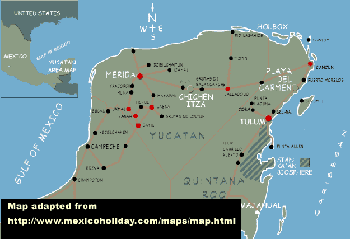

Viva México, or, Ten Days Without My Palm Pilot© |
 |
22-Sept-00: SFO, en route to Cancún It's nearly midnight. The flight leaves at one. The airport is surprisingly full. None of us can sleep, the needless announcements an unwelcome Muzak. I awaken in bursts, moments of clarity in time with the PA system. Other people more lively: male guffaws. Usual distress at being forced to wait in this beige caravanserai, though the red-eye time rather suits me: my brain is loose from normal day-end sleepiness, and the disorientation of slouching with other nonresidents in this unloved place is no displeasure. I am already dim. |